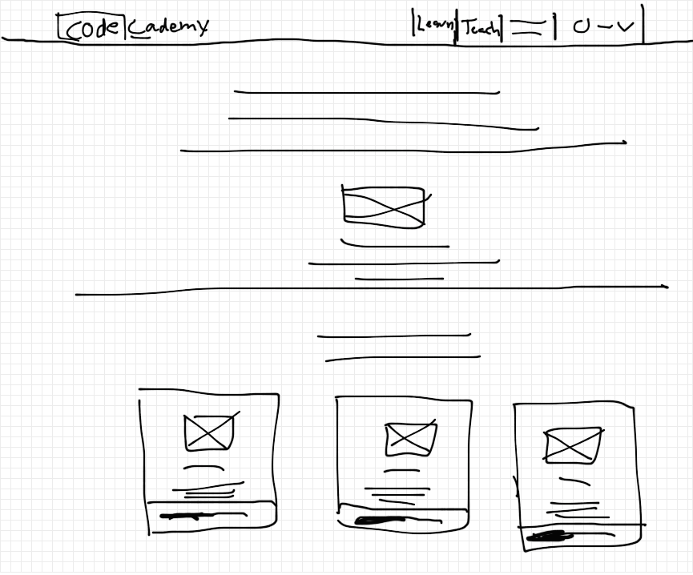
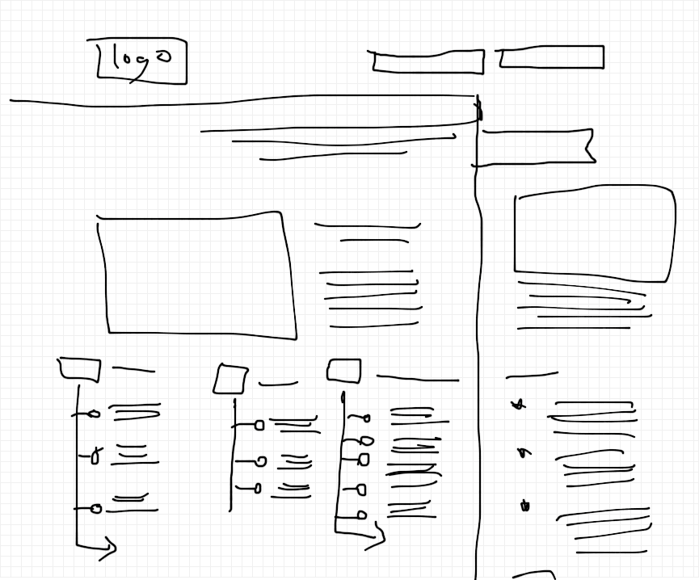
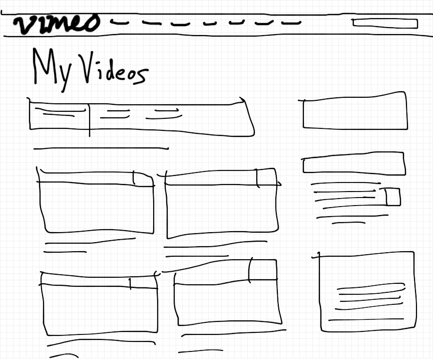

Wireframing
I chose the dashboard page on codecademy. The most obvious problem this page is solving is how to know where you are at in the tutorials you are working on. I think the main visual challenge is still making this page easily accessible if you are trying to do something other than continue on your current tutorial. They put a couple of options up top without crowding the page which helps navigation while keeping the design very clean.
I chose the homepage of wirecutter. The problem they are trying to solve is finding/filtering through the massive amount reviewed items they have. Of course, you can always use the search feature, but isn't it nice to find things that you didn't even know you needed to see how they were reviewed, just to be relevant when someone talks about the smart watch they just bought. The visual challenge is having such a large amount of information, both choosing what to put on the home page but how much more importantly. I think they have great start but could come a long way in terms of organizing the information visually.
I chose the "My Videos" page from vimeo. The problem they are solving is finding and navigating through the person videos you have added to vimeo. I think the biggest visual challenges relate to how much information there can be related to a video. You have a series of security and advanced features relating to each video. How do you get this into the main screen without creating clutter? I think one thing I like about this page is the size they chose for the video. It is big enough to see what is going on while still leaving room to it a good amount of videos on the page.
